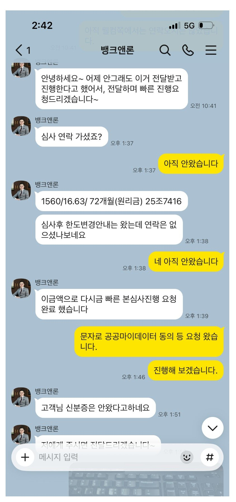

[차량담보대출] 기대출(5,000만원) 너무 많은 상황에 1,560만원 대출 받았으며, 자금으로 인한 스트레스 없이 다시 일상으로 돌아갈 수 있을꺼 같습니다. 김용혁 이사님 정말 감사합니다.
실제 연소득 5,800만원인 직장인입니다.(현 회사 재직기간 5년, 사대보험가입, NICE 746점, KCB 614점)
기대출(5,000만원) 너무 많은 상황에 김용혁 이사님 도움으로 차량담보대출로 생각했던거 이상으로 대출을 받을 수 있었습니다.
매번 친절하게 도와주셔서 대출이 필요하면 항상 연락을 드렸었는데 그때마다 친절하게 도움 주셔서 너무 감사합니다.
이사님 도움 없었더라면 혼자 어떻게 해결하지 하고 지금도 고민이 많았을꺼 같습니다.
이번에 차량담보대출로 1,560만원 대출 받았으며, 자금으로 인한 스트레스 없이 다시 일상으로 돌아갈 수 있을꺼 같습니다.
다시 한 번 도움주신 김용혁 이사님 정말 감사드립니다.

https://cafe.naver.com/cityman88/311774